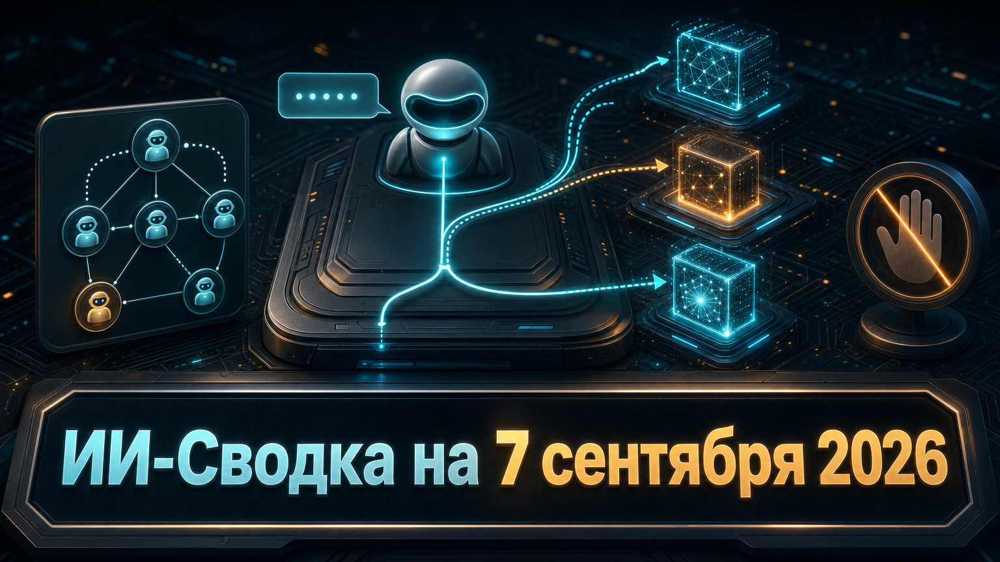

Новостей сегодня меньше, чем обычно
В короткой повестке дня — практическое развитие инструментов для агентной разработки. Google расширила Antigravity CLI механизмами, которые позволяют комбинировать модели и формализовать работу кастомных субагентов.
Изменение не означает появления новой базовой модели, но показывает, как среда разработки постепенно берёт на себя оркестрацию нескольких специализированных исполнителей и контроль их действий.
В версии Antigravity CLI 1.1.27 появилась команда /model <name> <prompt>. Она позволяет в рамках текущей сессии отправить один запрос другой модели, а затем продолжить работу с исходной моделью, не меняя сохранённый выбор. В официальных примечаниях к релизу также зафиксирована возможность объявлять зависимые субагенты в Markdown-frontmatter кастомного агента через список agents.
Для автоматизированных запусков важна ещё одна деталь: в headless-режиме запрещённые действия инструментов теперь явно отражаются в JSON как denied_actions. Это упрощает диагностику ограничений и проверку поведения агента в конвейерах разработки. Новые функции полезны командам, которые тестируют мультимодельные workflow, но сами по себе не гарантируют качество ответов, безопасность вызовов инструментов или корректность декомпозиции задач между субагентами. Antigravity CLI v1.1.27